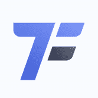
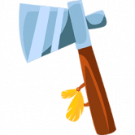
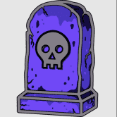
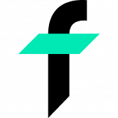
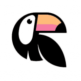
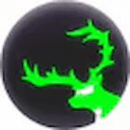
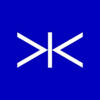
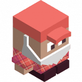
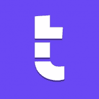

WorldSwap - BALI Edition WorldSwap.Finance 是增强型多链单产农业生态系统的核心，其设计和实施考虑了一个简单而强大的理念：提供超高产的独立农场，同时为农民和农民提供一个不断增长的活跃和
WorldSwap - HANOI Edition WorldSwap.Finance 是增强型多链单产农业生态系统的核心，其设计和实施考虑了一个简单而强大的理念：提供超高产的独立农场，同时为农民和农民提供一个不断增长的活跃和
SwapMatic SwapMatic 是 100% 去中心化的服务。 任何人 - 可以创建交易所 - 添加或删除流动性 - 获得 0.3% 的池奖励 - 利用现有的流动性池 - 围绕核心工厂合约开发总能从市场中找到最优
TOFFEE SAFEFARM 什么是太妃糖安全农场？ TOFFEE SAFEFARM 是 BSC 上第一个用于再膨胀代币的 YIELD FARMING……它是一个促进复合自动化和单产农业的平台。 TOFFEE 使用各种策略来帮助用户通
TofuSwap TofuDefi 是一种无需许可的去中心化 DeFi 解决方案，它将结合多个独立的 DeFi 协议。 第一个是 TofuSwap。 TofuSwap 是一种用于在 TRON 网络上自动进行代币交换的协议。 TofuSwap 基
 TokenField 什么是 TokenField？ TokenField：赚取加密货币的最聪明方法 TokenField Token，以下简称 TF，是一种符合 ERC-20 标准的智能合约，专为部署在
TokenJenny TokenJenny 最初是一个基于 Harmony 的免费代币生成器工具，使任何人都可以在链上创建 HRC-20 代币。 现在，TokenJenny 为链提供了许多独特的功能，例如 Gem Mines
TokyoSwap 什么是东京交换？ TokyoSwap.Finance 概述 TokyoSwap.Finance 是一个去中心化的多链 Yield Farm 项目，在币安智能链和 Fantom 网络 (FTM) 上运行 东京令牌。 代币经济学： 启动价格： 1 美元 最大供应量： 500,000 5% 转让
 Tomahawk 什么是战斧？ Tomahawk 在币安智能链上运行，这是迄今为止技术上最先进的主要区块链。 Binance 开发团队在改进以太坊区块链的代码方面做得很好。 我们邀请您参加战斧模
 Tomb Finance 什么是坟墓金融？ 古墓算法代币是第一个项目，也是生态系统的基础，将为代币持有者带来实用性和价值。 由 Tomb.finance 团队设计，作为 OPERA Fantom 上第一个与 FTM 而不是稳定币
 TOMOFINANCE TomoFinance 是生成 TAI（TomoChain 上的稳定币）的门户。 使用 TomoFinance，您可以管理您的抵押品以及 TAI 的生成。 TomoFinance 作为 TomoChain 区块链上的去中心
Tornado 什么是龙卷风？ TCORE 是一种基于 cVault (CORE) 源代码的非通胀加密货币，旨在以完全去中心化的方式自主执行盈利策略。 这些是 TCORE Vault 生态系统的主要产品： 通过 TCORE 质押实现
 Toucan 什么是巨嘴鸟？ 碳 + DeFi 我们将碳作为新的货币乐高积木引入 Web3。 启动一个开放和去中心化的气候金融生态系统。 Toucan Bridge 将自愿碳市场连接到 Web3。对于
 ToxicDeer Finance 什么是毒鹿金融？ ToxicDeer (DEER) 是一个运行在 Cronos 链上的抗通缩和抗通胀的加密项目。 它从 BasisCash 及其前身 Pegasus、Soup 和 Tomb Finance 中汲取灵感。 我们希望通过将 DEER 与
 Tracer DAO 什么是 Tracer DAO？ Tracer 是 Arbitrum 上用于衍生品的开源智能合约协议。 Tracer 能够让任何人从 Tracer Factory 模板部署衍生品市场，以管理他们的数字和现实世界金融风险。 推出的第一
 Trader Joe 什么是交易员乔？ Trader Joe 是 Avalanche 区块链原生的一站式去中心化交易平台。 Trader Joe 快速、安全地构建，旨在为 DeFi 前沿的社区服务。 在一个完全集成的屋顶下最大化您的收
 Tranche Finance 什么是分批融资？ Tranche 是一种去中心化的风险管理协议。 该协议与任何应计利息代币（例如 Compound 的 cTokens 和 AAVE 的 aTokens）集成，以创建两种新的计息工具，一种
Tranchess Protocol 什么是传输协议？ Tranchess 是一种提高收益的资产跟踪器，具有多种风险回报解决方案。 Tranchess 在跟踪特定标的资产的单一主要基金中提供了不同的风险/回报矩阵。 Tranchess 这
Tranquil Finance 什么是平安金融？ Tranquil Finance 是 Harmony ONE 区块链上的算法货币市场协议和 DEX。 它允许用户交换、供应和借入资产，同时以完全无需许可和去中心化的方式接收或支付利
Trapeza Protocol 什么是 Trapeza 协议？ Trapeza 是一种去中心化的储备货币协议。 Trapeza 旨在成为基于平衡增长的真正储备货币。 Trapeza 是最可靠、最公平的去中心化储备货币协议。 没有预售/私人
Traverse 什么是穿越？ 什么是穿越？穿越的意义何在？ Traverse 是 Avalanche 网络上目前第一个基于 VERSE 代币的多链去中心化储备货币协议。每个 VERSE 代币都由 Traverse 库中的一篮子资产（例如，
WagmiDAO WagmiDAO 是第一个多链储备支持的去中心化交易所（RDEX）。它专注于不断增长自己的国库和原生代币的价值。 WagmiDAO 的整个理念受到了一些最著名的现代 DeFi 协议的启
WaltsWorld xxxxxxxxxx WaltsWorld 是一个旨在成为 DEFI 万物中心的生态系统。我们使用 DEFI 3.0 并投资我们的资金来赚取收益和利润，这些收益和利润用于回购、营销和开发。我们与其他平台的不
Wand Finance MultiChain 上的新一代 Yield Farm 具有很多魔力#bsc #polygon #yield。我们的咨询方法意味着在我们的指导下，您可以构建满足您需求的完美解决方案。在亚太地区获得低
Wisteria Swap 无法通过代币销毁来控制通货膨胀的服务最终会下降。这样一来，WisteriaSwap 就会满足很多期待。 WisteriaSwap 是 DeFi 2.0 形式的 YieldFarm DeFi 服务。 （它不是奥林巴斯
Wolfpackspace Wolf-Pack：由 Wolf-Pack 合约和流动性池提供支持的币安智能链上的链上期权交易协议。 Wolf-Pack 是 Wolf-Pack 合约的无信任创建、维护和结算协议。 Wolf-Pack 合约是一种类似于期
Wonderland Wonderland 是 Avalanche Network 上第一个基于 TIME 代币的去中心化储备货币协议。每个 TIME 代币都由 Wonderland 宝库中的一揽子资产（例如 MIM、TIME-AVAX LP 代币等）支持，赋予其不
WOODCHAIN WoodChain 是一种去中心化金融，其使命是为用户带来最大的用处。 Wood Chain 是一个基于 ETH、BSC、POLYGON、HECO 等众多智能链网络的一体化平台。 在 Wood
Yieldly.Finance Yieldly 是 Algorands 第一个也是最大的 Defi 协议。 我们的核心目标是让用户和项目能够在没有摩擦、gas 效率低下或安全风险的情况下交换数字价值。 Yieldly 的产品套件包括质押
YieldWolf YieldWolf 是下一代 DeFi 自动化平台。 它有效地根据最知名的协议自动执行单产农业策略。 YieldWolf 通过以最优利率自动组合奖励并在池中的所有农民之间分配 gas 成本来增加潜在
 源代码的非通胀加密货币，旨在自主执行盈利策略.")